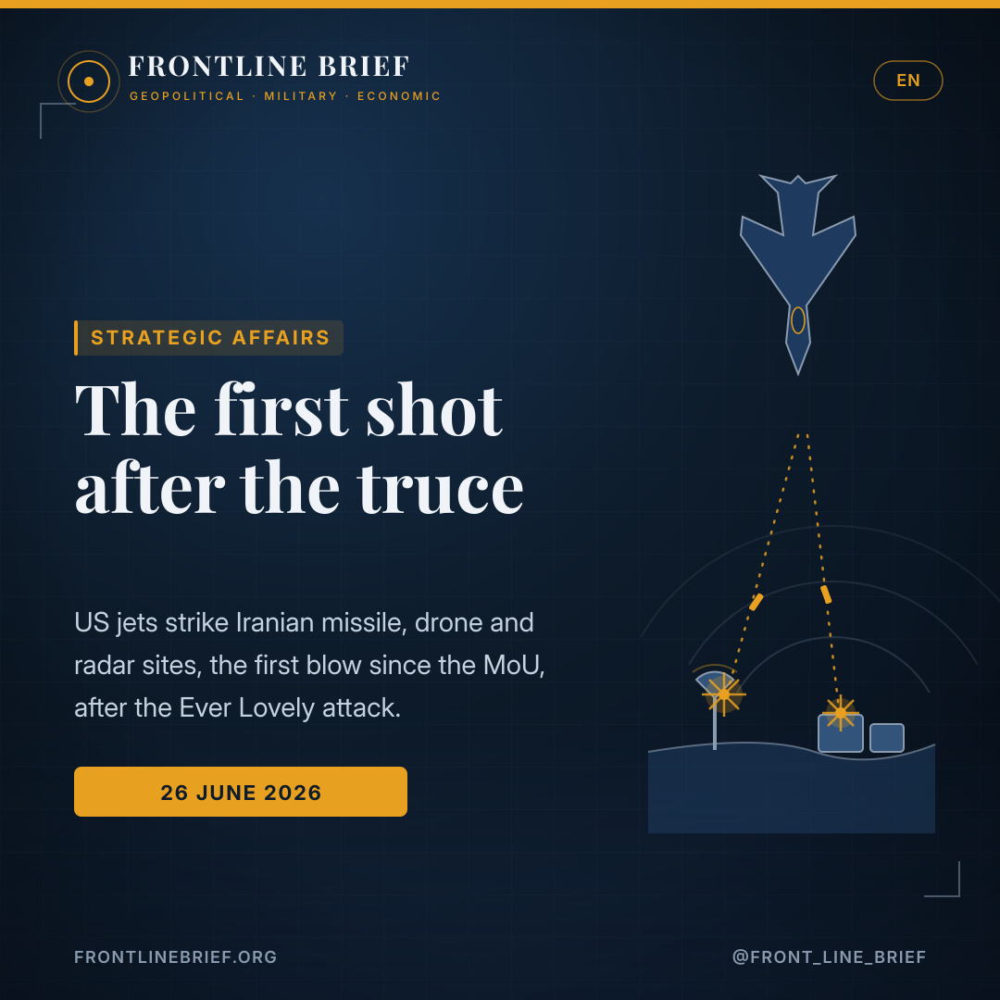
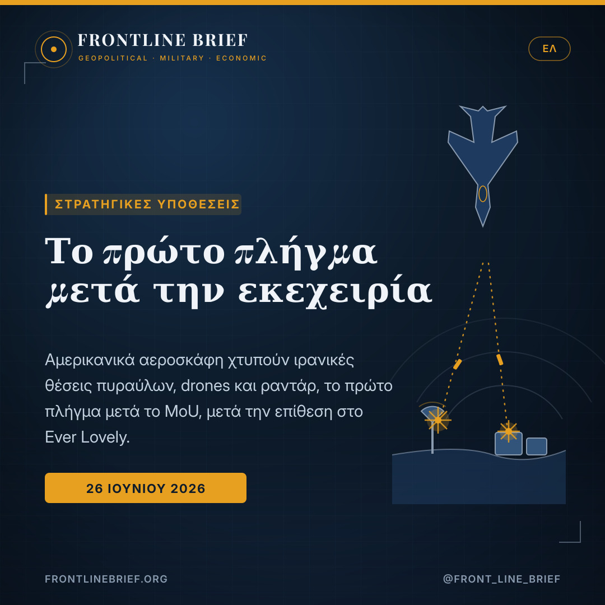
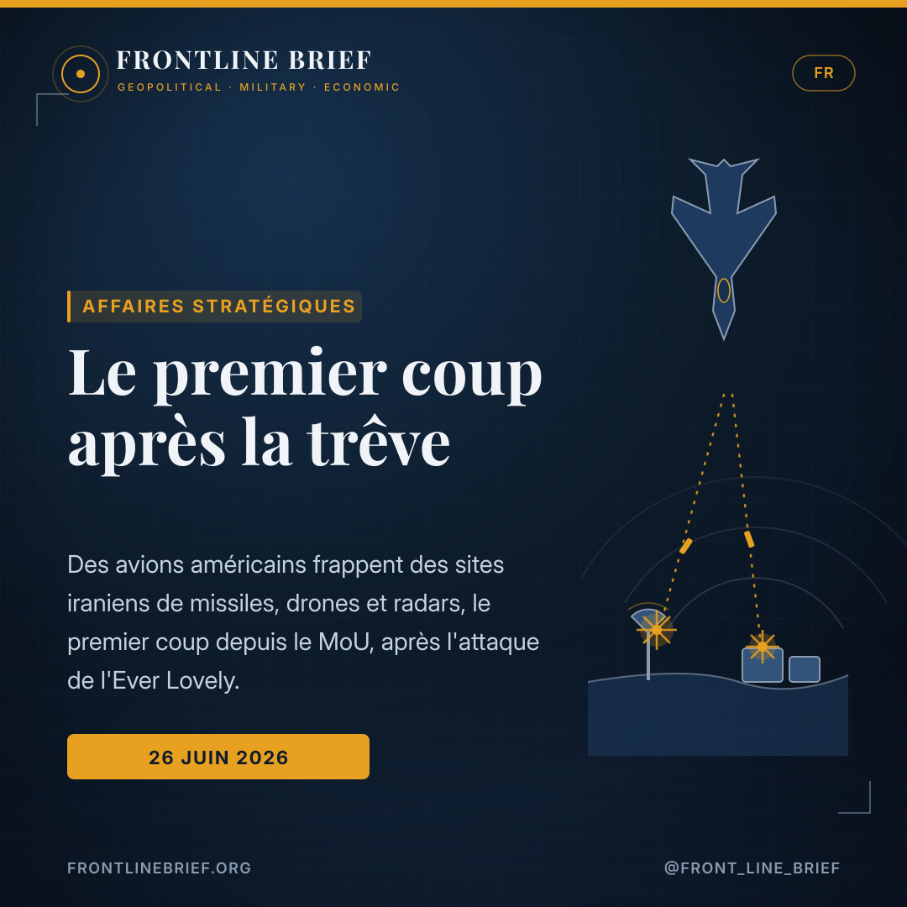
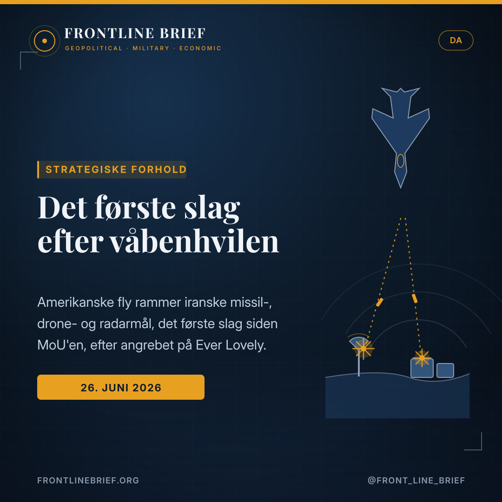
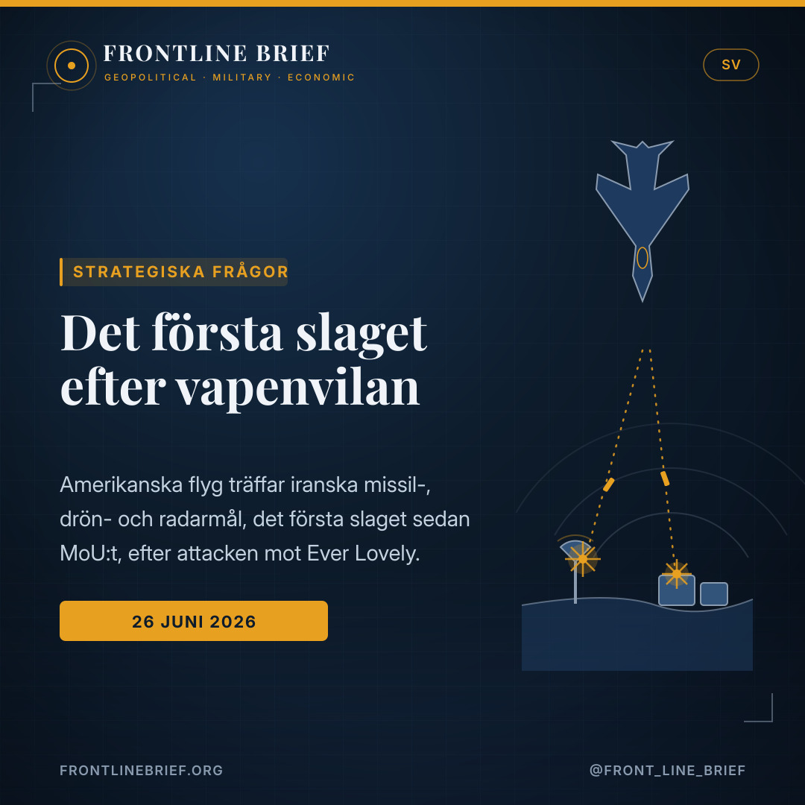

The first shot after the truce: the US strikes Iran over the Hormuz ship attack
A week-old peace memorandum has met its first airstrike. US Central Command says American aircraft hit Iranian missile, drone and radar sites in retaliation for the drone attack on the cargo ship Ever Lovely — the first US strike on Iran since Washington and Tehran signed their understanding, and a sharp test of how durable the truce really is.





First blow since the MoU
US Central Command says American aircraft struck Iranian missile and drone storage locations and coastal radar sites — its first kinetic response against Iran since the memorandum was signed the previous Friday — calling it a powerful response to the attack on a commercial ship.
A ship and a drone
CENTCOM says Iran hit the Singapore-flagged cargo ship Ever Lovely with a one-way attack drone on 25 June as it left Hormuz along the Omani coast, an act it called a clear violation of the ceasefire and a blow to freedom of navigation.
Tehran digs in
Iranian state media said Hormuz would not return to its pre-war state and that transit must follow Tehran's routes. The IRGC Navy claimed reprisal strikes on US targets — without showing proof — while CENTCOM declined to comment.
The first blow since the memorandum
The week-old truce did not last untested. US Central Command announced that American aircraft had struck Iranian targets in retaliation for an Islamic Revolutionary Guard Corps drone attack on a cargo ship leaving the Strait of Hormuz the day before. It was, by CENTCOM's own framing, the first US kinetic response against Iran since Washington and Tehran signed a memorandum of understanding on a peace deal the previous Friday — a marker that the agreement, however fragile, has already absorbed its first armed shock.
What was hit, and why
According to the command, US aircraft struck Iranian missile and drone storage locations and coastal radar sites. The justification was specific: Iran had hit the M/V Ever Lovely, a Singapore-flagged cargo ship, with a one-way attack drone on 25 June as it exited Hormuz along the Omani coast. CENTCOM called its operation a powerful response, said the ship attack had "clearly violated the ceasefire," and cast the strikes as a defence of freedom of navigation as commerce increasingly moves back through the corridor.
Trump's warning
The political signal had been telegraphed. Earlier that Friday, asked whether Iran would face consequences for the ship attack, President Trump said simply, "We'll find out." He added that he did not like that Iran "took a shot" the day before, describing a target ship that took "a little beating," and warned that Tehran "shouldn't be doing that." Within hours, the answer arrived in the form of an airstrike.
A week-old truce met its first airstrike — over a single cargo ship and a drone.
Iran digs in
Tehran's response was to harden, not retreat. Iranian state broadcaster IRIB declared that the situation in Hormuz would not return to what it was before the US attack on Iran, and that any transit must follow the routes Iran announces, or the security of vessels could not be guaranteed. Separately, the IRGC Navy claimed it had struck US military targets in the region in retaliation — though it offered no visual proof, and CENTCOM declined to comment. A US official reported no immediate Iranian military response on the ground.
Who controls the trigger
Underneath the exchange lies a genuine uncertainty: how much command and control Iran's government holds over its hardline Guard elements, and whether strikes like the one on the Ever Lovely are sanctioned from the top or driven from below. That ambiguity makes each incident harder to read and easier to misjudge. For now, the two sides are still negotiating a fuller peace, with the handling and monitoring of Iran's nuclear material among the unresolved sticking points. But the week's lesson is plain: in a corridor that carries a large share of the world's oil and a great deal of Europe's and Greece's shipping, a single drone and a single airstrike can put a brand-new truce back on the edge.
Το πρώτο πλήγμα μετά το πρωτόκολλο
Η εβδομάδων εκεχειρία δεν έμεινε αδοκίμαστη. Η αμερικανική Κεντρική Διοίκηση (CENTCOM) ανακοίνωσε ότι αμερικανικά αεροσκάφη έπληξαν ιρανικούς στόχους σε αντίποινα για επίθεση με drone των Φρουρών της Επανάστασης εναντίον φορτηγού πλοίου που έβγαινε από τα Στενά του Ορμούζ την προηγουμένη. Επρόκειτο, σύμφωνα με την ίδια τη διατύπωση της CENTCOM, για την πρώτη αμερικανική κινητική απάντηση κατά του Ιράν αφότου Ουάσιγκτον και Τεχεράνη υπέγραψαν πρωτόκολλο συνεννόησης για ειρηνευτική συμφωνία την προηγούμενη Παρασκευή — ένδειξη ότι η συμφωνία, όσο εύθραυστη κι αν είναι, δέχθηκε ήδη το πρώτο ένοπλο σοκ.
Τι χτυπήθηκε, και γιατί
Σύμφωνα με τη Διοίκηση, τα αμερικανικά αεροσκάφη έπληξαν ιρανικές θέσεις αποθήκευσης πυραύλων και drones, καθώς και παράκτια ραντάρ. Η αιτιολόγηση ήταν συγκεκριμένη: το Ιράν είχε χτυπήσει το Ever Lovely, φορτηγό υπό σημαία Σιγκαπούρης, με drone μιας κατεύθυνσης στις 25 Ιουνίου καθώς έβγαινε από τον Ορμούζ κατά μήκος της ακτής του Ομάν. Η CENTCOM χαρακτήρισε την επιχείρησή της ισχυρή απάντηση, είπε ότι η επίθεση στο πλοίο «παραβίασε σαφώς την εκεχειρία», και παρουσίασε τα πλήγματα ως υπεράσπιση της ελευθερίας της ναυσιπλοΐας, καθώς το εμπόριο επιστρέφει σταδιακά στον διάδρομο.
Η προειδοποίηση Τραμπ
Το πολιτικό σήμα είχε προαναγγελθεί. Νωρίτερα εκείνη την Παρασκευή, ερωτηθείς αν το Ιράν θα αντιμετώπιζε συνέπειες για την επίθεση στο πλοίο, ο πρόεδρος Τραμπ απάντησε απλώς «Θα δούμε». Πρόσθεσε ότι δεν του άρεσε που το Ιράν «τράβηξε σκανδάλη» την προηγουμένη, περιγράφοντας ένα πλοίο-στόχο που «έφαγε λίγο ξύλο», και προειδοποίησε ότι η Τεχεράνη «δεν θα έπρεπε να το κάνει αυτό». Μέσα σε ώρες, η απάντηση ήρθε με τη μορφή αεροπορικού πλήγματος.
Μια εκεχειρία λίγων ημερών συνάντησε το πρώτο της αεροπορικό πλήγμα — για ένα μόνο φορτηγό πλοίο κι ένα drone.
Το Ιράν σκληραίνει τη στάση του
Η απάντηση της Τεχεράνης ήταν να σκληρύνει, όχι να υποχωρήσει. Ο κρατικός ραδιοτηλεοπτικός φορέας IRIB δήλωσε ότι η κατάσταση στον Ορμούζ δεν θα επιστρέψει σε ό,τι ήταν πριν την αμερικανική επίθεση στο Ιράν, και ότι κάθε διέλευση πρέπει να ακολουθεί τις διαδρομές που ανακοινώνει το Ιράν, αλλιώς η ασφάλεια των πλοίων δεν μπορεί να διασφαλιστεί. Χωριστά, το Ναυτικό των Φρουρών ισχυρίστηκε ότι έπληξε αμερικανικούς στρατιωτικούς στόχους στην περιοχή σε αντίποινα — χωρίς όμως να παρουσιάσει οπτικές αποδείξεις, και η CENTCOM αρνήθηκε να σχολιάσει. Αμερικανός αξιωματούχος ανέφερε ότι δεν υπήρξε άμεση ιρανική στρατιωτική αντίδραση στο έδαφος.
Ποιος ελέγχει τη σκανδάλη
Κάτω από την ανταλλαγή κρύβεται μια γνήσια αβεβαιότητα: πόσο έλεγχο διαθέτει η ιρανική κυβέρνηση πάνω στα σκληροπυρηνικά στοιχεία των Φρουρών, και αν πλήγματα σαν αυτό στο Ever Lovely εγκρίνονται από την κορυφή ή ωθούνται από τη βάση. Αυτή η ασάφεια κάνει κάθε περιστατικό δυσκολότερο να ερμηνευθεί και ευκολότερο να παρεξηγηθεί. Προς το παρόν, οι δύο πλευρές εξακολουθούν να διαπραγματεύονται μια πληρέστερη ειρήνη, με τη διαχείριση και την παρακολούθηση του ιρανικού πυρηνικού υλικού ανάμεσα στα άλυτα ζητήματα. Το μάθημα όμως της εβδομάδας είναι σαφές: σε έναν διάδρομο που μεταφέρει μεγάλο μέρος του παγκόσμιου πετρελαίου και πολλή από τη ναυτιλία της Ευρώπης και της Ελλάδας, ένα μόνο drone κι ένα μόνο αεροπορικό πλήγμα μπορούν να φέρουν μια ολοκαίνουργια εκεχειρία ξανά στα όριά της.
Le premier coup depuis le mémorandum
La trêve, vieille d'une semaine, n'a pas tardé à être éprouvée. Le Central Command américain a annoncé que des avions américains avaient frappé des cibles iraniennes en représailles à une attaque de drone des Gardiens de la révolution contre un cargo quittant le détroit d'Ormuz la veille. C'était, selon la formulation même de CENTCOM, la première réponse cinétique américaine contre l'Iran depuis que Washington et Téhéran avaient signé un mémorandum d'entente sur un accord de paix le vendredi précédent — signe que l'accord, si fragile soit-il, a déjà encaissé son premier choc armé.
Ce qui a été frappé, et pourquoi
Selon le commandement, les avions américains ont frappé des sites iraniens de stockage de missiles et de drones ainsi que des radars côtiers. La justification était précise : l'Iran avait frappé le M/V Ever Lovely, un cargo sous pavillon singapourien, avec un drone kamikaze le 25 juin, alors qu'il quittait Ormuz le long de la côte omanaise. CENTCOM a qualifié son opération de réponse puissante, affirmé que l'attaque du navire avait « clairement violé le cessez-le-feu », et présenté les frappes comme une défense de la liberté de navigation, le commerce revenant peu à peu dans le corridor.
L'avertissement de Trump
Le signal politique avait été annoncé. Plus tôt ce vendredi, interrogé sur d'éventuelles conséquences pour l'Iran, le président Trump a simplement répondu « On verra ». Il a ajouté qu'il n'aimait pas que l'Iran ait « tiré » la veille, décrivant un navire visé qui avait « un peu encaissé », et averti que Téhéran « ne devrait pas faire ça ». En quelques heures, la réponse est arrivée sous la forme d'une frappe aérienne.
Une trêve d'une semaine a rencontré sa première frappe aérienne — pour un seul cargo et un drone.
L'Iran se braque
La réponse de Téhéran a été de durcir, non de reculer. Le radiodiffuseur d'État IRIB a déclaré que la situation à Ormuz ne reviendrait pas à ce qu'elle était avant l'attaque américaine contre l'Iran, et que tout transit devait suivre les routes annoncées par l'Iran, faute de quoi la sécurité des navires ne pouvait être garantie. Par ailleurs, la marine du CGRI a affirmé avoir frappé des cibles militaires américaines dans la région en représailles — sans toutefois fournir de preuve visuelle, et CENTCOM s'est abstenu de commenter. Un responsable américain a signalé l'absence de réponse militaire iranienne immédiate sur le terrain.
Qui contrôle la détente
Sous l'échange se cache une véritable incertitude : le degré de commandement que le gouvernement iranien exerce sur les éléments durs des Gardiens, et la question de savoir si des frappes comme celle de l'Ever Lovely sont validées au sommet ou poussées par la base. Cette ambiguïté rend chaque incident plus difficile à lire et plus facile à mal interpréter. Pour l'heure, les deux camps négocient encore une paix plus complète, le traitement et la surveillance du matériel nucléaire iranien comptant parmi les points en suspens. Mais la leçon de la semaine est claire : dans un corridor qui transporte une large part du pétrole mondial et une grande partie du transport maritime européen et grec, un seul drone et une seule frappe peuvent remettre une trêve toute neuve au bord du gouffre.
Det første slag siden memorandummet
Den uge gamle våbenhvile forblev ikke uafprøvet. Det amerikanske Central Command meddelte, at amerikanske fly havde ramt iranske mål som gengældelse for et droneangreb fra Revolutionsgarden mod et fragtskib, der forlod Hormuzstrædet dagen før. Det var, ifølge CENTCOM's egen formulering, den første amerikanske kinetiske reaktion mod Iran, siden Washington og Teheran underskrev et aftalememorandum om en fredsaftale den foregående fredag — et tegn på, at aftalen, hvor skrøbelig den end er, allerede har absorberet sit første væbnede chok.
Hvad blev ramt, og hvorfor
Ifølge kommandoen ramte amerikanske fly iranske lagre af missiler og droner samt kystradarer. Begrundelsen var specifik: Iran havde ramt M/V Ever Lovely, et fragtskib under Singapore-flag, med en envejs-angrebsdrone den 25. juni, mens det forlod Hormuz langs Omans kyst. CENTCOM kaldte sin operation et kraftfuldt svar, sagde, at angrebet på skibet «klart havde overtrådt våbenhvilen», og fremstillede angrebene som et forsvar for sejladsfriheden, mens handelen gradvist vender tilbage til korridoren.
Trumps advarsel
Det politiske signal var varslet. Tidligere den fredag, adspurgt om Iran ville få konsekvenser for angrebet på skibet, svarede præsident Trump blot «Det finder vi ud af». Han tilføjede, at han ikke brød sig om, at Iran «affyrede et skud» dagen før, beskrev et målskib, der havde «fået lidt tæsk», og advarede om, at Teheran «ikke burde gøre det». Inden for timer kom svaret i form af et luftangreb.
En uge gammel våbenhvile mødte sit første luftangreb — over et enkelt fragtskib og en drone.
Iran graver sig ned
Teherans reaktion var at hærde, ikke at trække sig. Statsradioen IRIB erklærede, at situationen i Hormuz ikke ville vende tilbage til det, den var før det amerikanske angreb på Iran, og at enhver transit skulle følge de ruter, Iran udpeger, ellers kunne skibenes sikkerhed ikke garanteres. Separat hævdede Revolutionsgardens flåde at have ramt amerikanske militære mål i regionen som gengældelse — dog uden at fremlægge visuelt bevis, og CENTCOM afstod fra at kommentere. En amerikansk embedsmand meldte om ingen umiddelbar iransk militær reaktion på jorden.
Hvem styrer aftrækkeren
Under udvekslingen ligger en reel usikkerhed: hvor meget kommando den iranske regering har over Gardens hardlinerelementer, og om angreb som det mod Ever Lovely er sanktioneret fra toppen eller drevet nedefra. Den tvetydighed gør hver hændelse sværere at læse og lettere at fejlvurdere. For nu forhandler de to sider stadig om en mere fuldstændig fred, hvor håndteringen og overvågningen af Irans nukleare materiale er blandt de uløste knaster. Men ugens lektie er klar: i en korridor, der fører en stor del af verdens olie og en stor del af Europas og Grækenlands skibsfart, kan en enkelt drone og et enkelt luftangreb bringe en helt ny våbenhvile på kanten igen.
Det första slaget sedan memorandumet
Den veckogamla vapenvilan förblev inte oprövad. Det amerikanska Central Command meddelade att amerikanska flygplan hade träffat iranska mål som vedergällning för en drönarattack från Revolutionsgardet mot ett lastfartyg som lämnade Hormuzsundet dagen innan. Det var, enligt CENTCOM:s egen formulering, den första amerikanska kinetiska reaktionen mot Iran sedan Washington och Teheran undertecknade ett samförståndsavtal om en fredsuppgörelse föregående fredag — ett tecken på att avtalet, hur skört det än är, redan absorberat sin första väpnade chock.
Vad som träffades, och varför
Enligt kommandot träffade amerikanska flygplan iranska lager för robotar och drönare samt kustradar. Motiveringen var specifik: Iran hade träffat M/V Ever Lovely, ett lastfartyg under Singapore-flagg, med en envägs-attackdrönare den 25 juni när det lämnade Hormuz längs Omans kust. CENTCOM kallade sin operation ett kraftfullt svar, sade att attacken mot fartyget «tydligt brutit mot vapenvilan», och framställde slagen som ett försvar av sjöfartsfriheten medan handeln gradvis återvänder till korridoren.
Trumps varning
Den politiska signalen hade förebådats. Tidigare den fredagen, tillfrågad om Iran skulle möta konsekvenser för attacken mot fartyget, svarade president Trump bara «Vi får se». Han tillade att han inte gillade att Iran «avlossade ett skott» dagen innan, beskrev ett målfartyg som «fått lite stryk», och varnade för att Teheran «inte borde göra så». Inom timmar kom svaret i form av ett flyganfall.
En veckogammal vapenvila mötte sitt första flyganfall — för ett enda lastfartyg och en drönare.
Iran står på sig
Teherans svar var att hårdna, inte att dra sig tillbaka. Statliga IRIB förklarade att läget i Hormuz inte skulle återgå till vad det var före den amerikanska attacken mot Iran, och att all transit måste följa de rutter Iran utlyser, annars kunde fartygens säkerhet inte garanteras. Separat påstod Revolutionsgardets flotta att den träffat amerikanska militära mål i regionen som vedergällning — dock utan att visa visuella bevis, och CENTCOM avstod från att kommentera. En amerikansk tjänsteman rapporterade ingen omedelbar iransk militär reaktion på marken.
Vem styr avtryckaren
Under utbytet ligger en genuin osäkerhet: hur mycket kommando den iranska regeringen har över Gardets hårdföra element, och om slag som det mot Ever Lovely är sanktionerade uppifrån eller drivna underifrån. Den tvetydigheten gör varje incident svårare att läsa och lättare att missbedöma. För närvarande förhandlar de två sidorna fortfarande om en mer fullständig fred, där hanteringen och övervakningen av Irans kärnmaterial hör till de olösta knäckfrågorna. Men veckans läxa är tydlig: i en korridor som för en stor del av världens olja och en stor del av Europas och Greklands sjöfart kan en enda drönare och ett enda flyganfall föra en helt ny vapenvila till randen igen.
Sources
- The War Zone (TWZ) — U.S. Carries Out First Strike On Iran Since Peace Memorandum Signed (Howard Altman, 26 June 2026)
- US Central Command (CENTCOM) statement; President Trump remarks; Iranian state media IRIB; IRGC Navy claim via Press TV
- Frontline Brief background — the US–Iran MoU, the Ever Lovely drone strike and the IMO evacuation pause